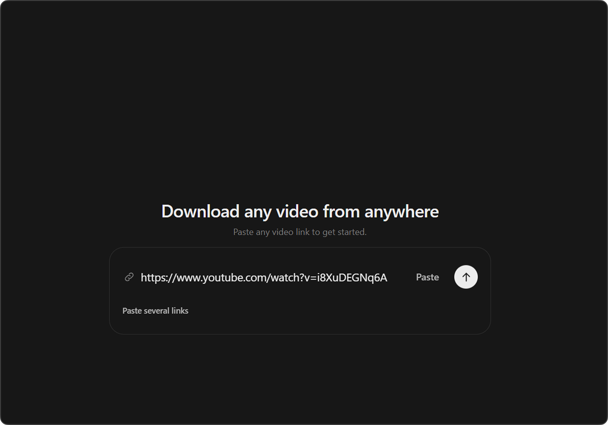
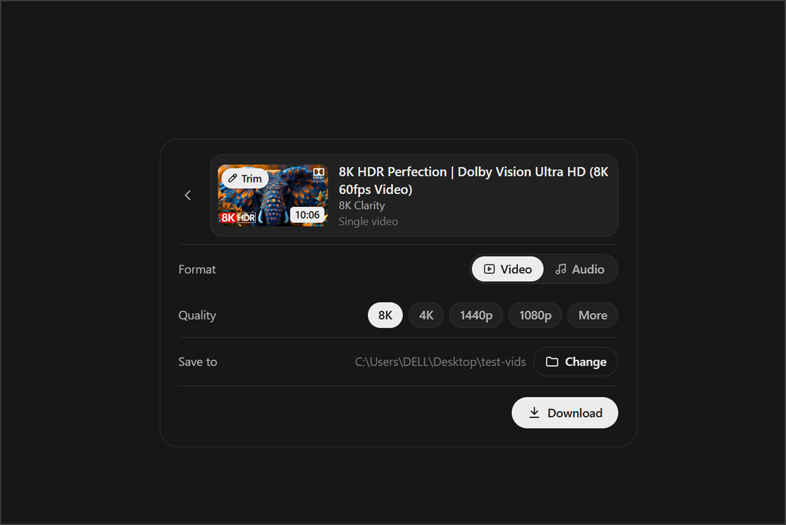
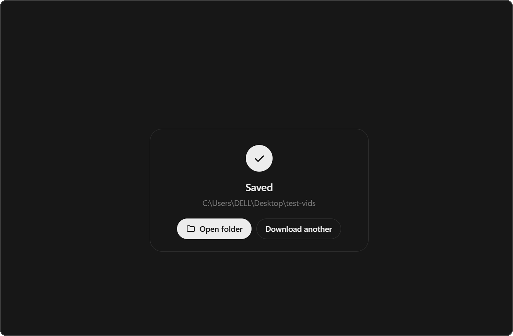

Download any video from anywhere.
Download videos with high speeds.
Save videos from any site in seconds with high-speed downloads and no limits on quality.
how to download videos



Available for macOS and Windows
Save videos from any site in seconds with high-speed downloads and no limits on quality.


